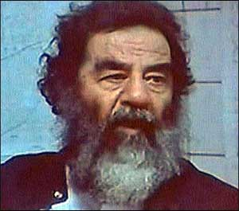

|

Saddam Captured, Demands Backpay
Military and media debating whether or not to credit Jessica Lynch.
- - - - - - - - - -
by Greg Palast
 ORMER IRAQ STRONGMAN Saddam Hussein was taken into custody Saturday. Various television executives, White House spin doctors and propaganda experts at the Pentagon are at this time wrestling with the question of whether to claim PFC Jessica Lynch seized the ex-potentate or that Saddam surrendered after close hand-to-hand combat with current Iraqi strongman Paul Bremer III. ORMER IRAQ STRONGMAN Saddam Hussein was taken into custody Saturday. Various television executives, White House spin doctors and propaganda experts at the Pentagon are at this time wrestling with the question of whether to claim PFC Jessica Lynch seized the ex-potentate or that Saddam surrendered after close hand-to-hand combat with current Iraqi strongman Paul Bremer III.
Ex-President Hussein himself told US military interrogators that he had surfaced after hearing of the appointment of his long-time associate James Baker III to settle Iraq's debts. "Hey, my homeboy Jim owes me big time," Mr. Hussein stated. He asserted that Baker and the prior Bush regime, "owe me my back pay. After all I did for these guys you'd think they'd have the decency to pay up."
The Iraqi dictator then went on to list the "hits" he conducted on behalf of the Baker-Bush administrations, ending with the invasion of Kuwait in 1990, authorized by the former US secretary of state Baker.
Mr. Hussein cited the transcript of his meeting on July 25, 1990 in Baghdad with US Ambassador April Glaspie. When Saddam asked Glaspie if the US would object to an attack on Kuwait over the small emirate's theft of Iraqi oil, America's Ambassador told him, "We have no opinion…. Secretary [of State James] Baker has directed me to emphasize the instruction ... that Kuwait is not associated with America."
Glaspie, in Congressional testimony in 1991, did not deny the authenticity of the recording of her meeting with Saddam which world diplomats took as US acquiescence to an Iraqi invasion.
While having his hair styled by US military makeover artists, Saddam listed jobs completed at the request of his allies in the Carter, Reagan and Bush administrations for which he claims back wages:
- 1979: Seizes power with US approval; moves allegiance from Soviets to USA in Cold War.
- 1980: Invades Iran, then the "Unicycle of Evil," with US encouragement and arms.
- 1982: Reagan regime removes Saddam's regime from official US list of state sponsors of terrorism.
- 1983: Saddam hosts Donald Rumsfeld in Baghdad. Agrees to "go steady" with US corporate suppliers.
- 1984: US Commerce Department issues license for export of aflatoxin to Iraq useable in biological weapons.
- 1988: Kurds in Halabja, Iraq, gassed.
- 1987-88: US warships destroy Iranian oil platforms in Gulf and break Iranian blockade of Iraq shipping lanes, tipping war advantage back to Saddam.
In Baghdad today, the US-installed replacement for Saddam, Paul Bremer, appeared to acknowledge his predecessor Saddam's prior work for the US State Department when he told Iraqis, "For decades, you suffered at the hands of this cruel man. For decades, Saddam Hussein divided you and threatened an attack on your neighbors."
In reaction to the Bremer speech, Mr. Hussein said, "Do you think those decades of causing suffering, division and fear come cheap?" Noting that for half of that period, the suffering, division and threats were supported by Washington, Saddam added, "So where's the thanks? You'd think I'd at least get a gold watch or something for all those years on US payroll."
In a televised address from the Oval Office, George W. Bush raised Saddam's hopes of compensation when he cited Iraq's "dark and painful history" under the US-sponsored Hussein dictatorship.
Saddam was also heartened by Mr. Bush's promise that, "The capture of Saddam Hussein does not mean the end of violence in Iraq." With new attacks by and on US and other foreign occupation forces, the former strongman stated, "It's reassuring to know my legacy of darkness and pain for Iraqis will continue under the leadership of President Bush."
While lauding the capture of Mr. Hussein, experts caution that the War on Terror is far from over, noting that Osama bin Laden, James Baker and George W. Bush remain at large.

|